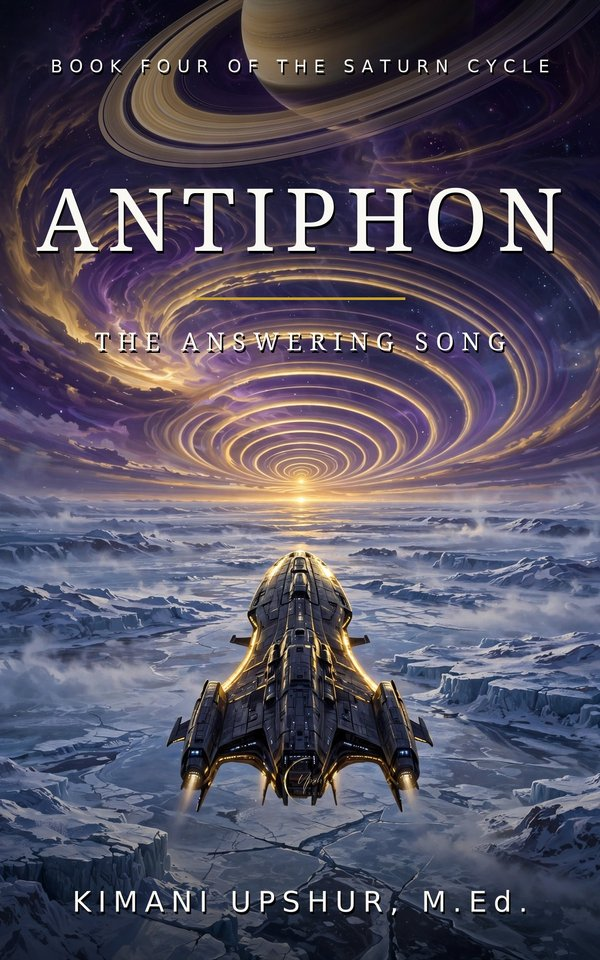

Readers Also Browse
More Fiction titles.

More Fiction titles.
One short, Scripture-first devotional from Kimani Upshur, M.Ed. in your inbox every morning. Free forever — unsubscribe anytime.
Email Me the DevotionalSend one email and we will add you to the free daily list.